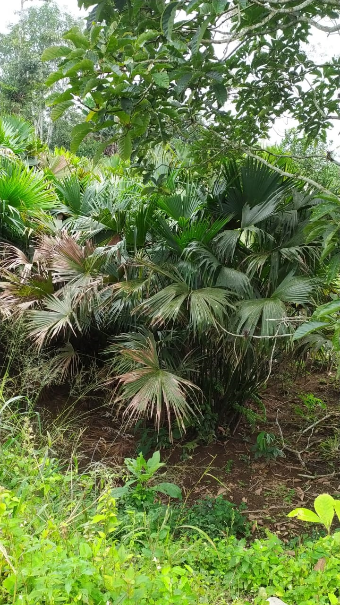
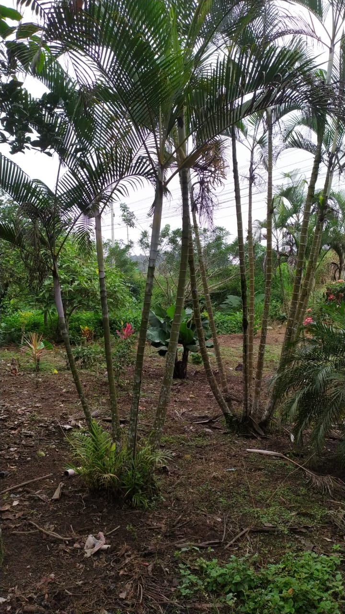
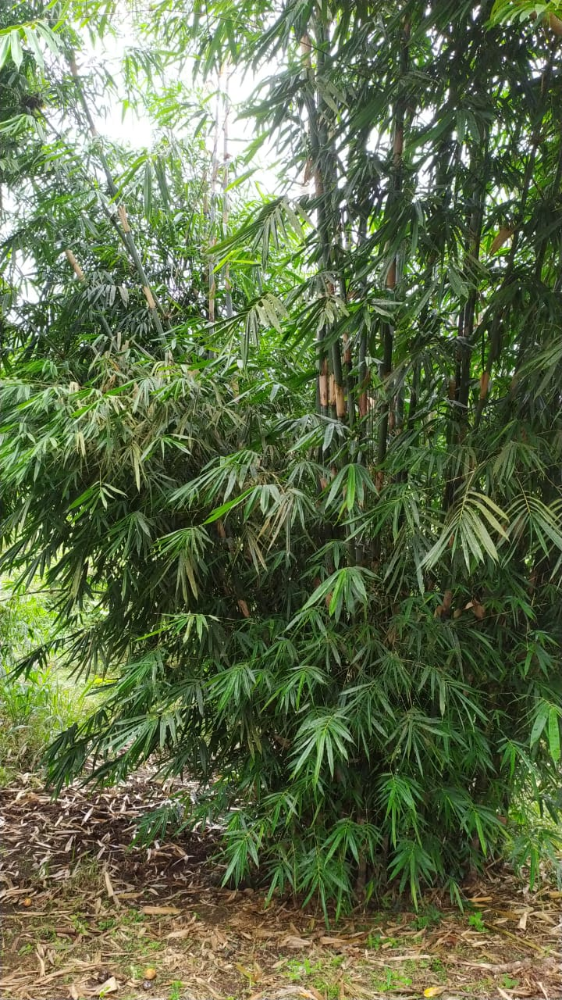
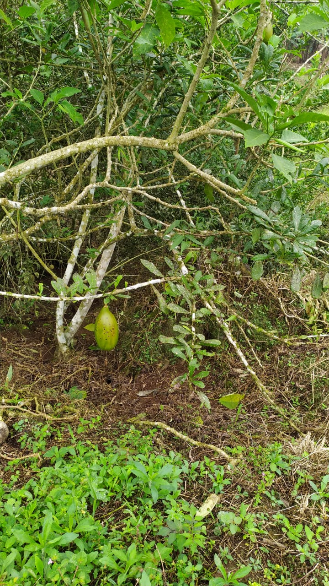
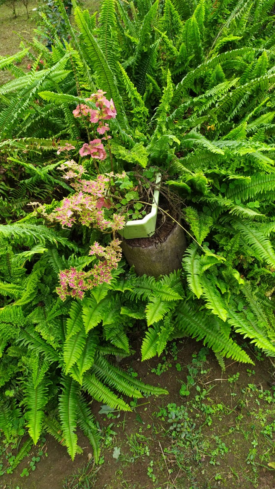

Fibra de una palmera peculiar, con esta materia prima, los tejedores comienzan el tejido de un dia a ocho meses, segun su calidad y finura. Con el reconocimiento del Tejido tradicional del sombrero de paja toquilla ecuatoriano como Patrimonio Inmaterial de la Humanidad se espera visibilizar el significado y función sociocultural del patrimonio inmaterial que se expresa en un conjunto de conocimientos,prácticas y técnicas tradicionales
tienen una variada utilidad, desde la alimentación ya que algunos de sus frutos son comestibles hasta el uso de sus troncos para el armado de canoas e incluso para la construcción. Se utilizan para la preparación de bebidas alcohólicas, miel, aceites, fibras, muebles, objetos de decoración y medicamentos entre alguna de sus utilidades.
El término indígena guadua fue empleada por las comunidades originarias para designar a una especie de “bambú nativo”, que luego sería rebautizado como “Guadua que significa “hoja angosta”–y taxonómicamente pertenece a la familia.
El mate proviene de un árbol, pero en el campo lo conocen como bototo se cultiva los árboles para luego, con gran paciencia y destreza, darles una forma diferente.
Los helechos son plantas vasculares sin semilla, cuyas características morfológicas más sobresalientes son sus hojas grandes, usualmente pinadas y con prefoliación circinada.
todo los derechos reservados en 2021 ©